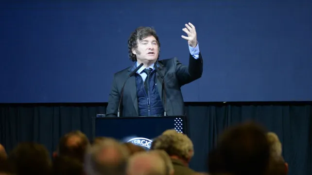

Javier Milei vuelve a Rosario: el presidente participará del aniversario de la Bolsa de Comercio
El presidente estará este viernes en la ciudad acompañado por su equipo económico. Javier Milei será el primero en participar dos veces en una aniversario de esta entidad

El presidente Javier Milei llegará este viernes a la ciudad para encabezar el acto por el 141º aniversario de la Bolsa de Comercio de Rosario (BCR), acompañado por integrantes de su equipo económico.
El mandatario se convertirá así en el primer jefe de Estado argentino en participar en dos actos por el aniversario de la entidad bursátil rosarina, que históricamente reúne a referentes del sector agroindustrial y financiero del país.
La agenda oficial prevé la presencia de funcionarios del gabinete económico, aunque aún no trascendieron los nombres confirmados. La ceremonia se realizará en la sede central de la BCR a las 21 y contará con la participación de empresarios, dirigentes y autoridades locales.
Javier Milei y su última visita a la Bolsa
En su visita anterior a la Bolsa de Comercio de Rosario, Javier Milei dejó en claro el año pasado que su prioridad no era el aniversario de la entidad bursátil. Aunque la invitación respondía a la celebración por los 140 años de la institución, el entonces presidente electo utilizó su discurso de más de una hora para justificar el veto a la reciente ley de aumento jubilatorio, sin dedicar siquiera un saludo protocolar a la Bolsa ni a la ciudad.
>> Leer más: Ni un feliz cumpleaños: Milei no le devolvió ninguna redonda al agro en la Bolsa
El mandatario evitó mencionar al agro y se concentró en cuestionar a los legisladores que impulsaron la movilidad jubilatoria, a quienes calificó de “degenerados fiscales” y “mentirosos”, advirtiendo que la medida implicaría un costo fiscal de “370 mil millones de dólares”.
El clima en el auditorio fue de sorpresa: Milei “asistió al cumpleaños y fue directo a comer la torta”, graficaron algunos asistentes, sin ofrecer gestos ni felicitaciones a la institución anfitriona. Habrá que ver cuál es el ánimo del mandatario este año.